Grado 9
1785 recursos en español para el grado 9, sin preparación y con solucionario.
1.785 recursos
Materia

«Dentro del cerebro humano» – Búsqueda del tesoro de lectura

«Dentro de una refinería» – Búsqueda del tesoro de lectura

«La bomba de calor» – Búsqueda del tesoro de lectura

«Rescate seguro en el agua» – Búsqueda del tesoro de lectura
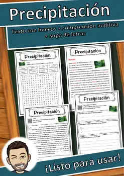
Precipitación – Ficha de lectura: texto con huecos, comprensión auditiva y sopa de letras
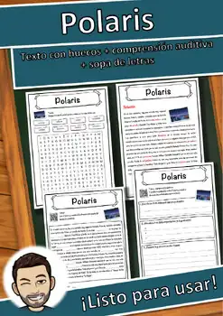
Polaris – Ficha de lectura: texto con huecos, comprensión auditiva y sopa de letras

Pluma estilográfica – Ficha de lectura: texto con huecos, comprensión auditiva y sopa de letras
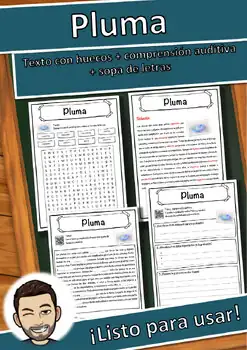
Pluma – Ficha de lectura: texto con huecos, comprensión auditiva y sopa de letras

Platón – Ficha de lectura: texto con huecos, comprensión auditiva y sopa de letras
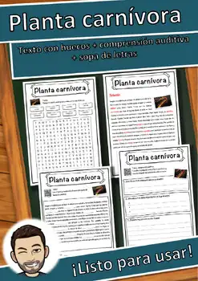
Planta carnívora – Ficha de lectura: texto con huecos, comprensión auditiva y sopa de letras
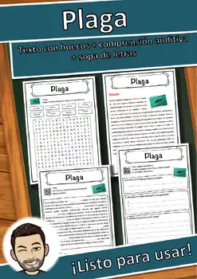
Plaga – Ficha de lectura: texto con huecos, comprensión auditiva y sopa de letras

Pizza – Ficha de lectura: texto con huecos, comprensión auditiva y sopa de letras

Pippi Långstrump – Ficha de lectura: texto con huecos, comprensión auditiva y sopa de letras
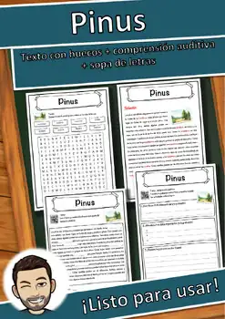
Pinus – Ficha de lectura: texto con huecos, comprensión auditiva y sopa de letras

Piloto de aviación – Ficha de lectura: texto con huecos, comprensión auditiva y sopa de letras

Piel – Ficha de lectura: texto con huecos, comprensión auditiva y sopa de letras
Pico – Ficha de lectura: texto con huecos, comprensión auditiva y sopa de letras
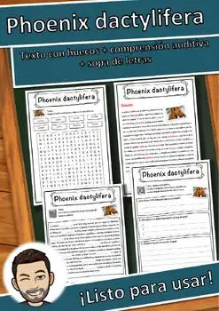
Phoenix dactylifera – Ficha de lectura: texto con huecos, comprensión auditiva y sopa de letras
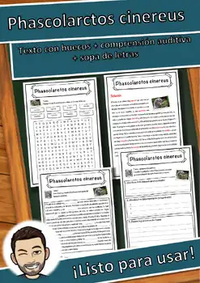
Phascolarctos cinereus – Ficha de lectura: texto con huecos, comprensión auditiva y sopa de letras
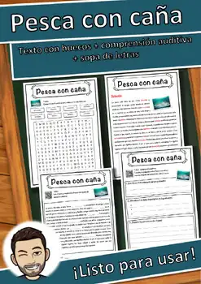
Pesca con caña – Ficha de lectura: texto con huecos, comprensión auditiva y sopa de letras
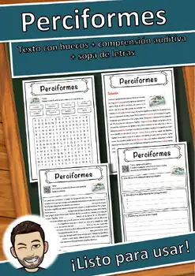
Perciformes – Ficha de lectura: texto con huecos, comprensión auditiva y sopa de letras

Pelé – Ficha de lectura: texto con huecos, comprensión auditiva y sopa de letras
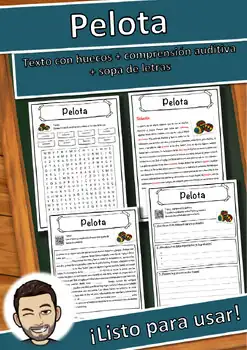
Pelota – Ficha de lectura: texto con huecos, comprensión auditiva y sopa de letras

Paz de Westfalia – Ficha de lectura: texto con huecos, comprensión auditiva y sopa de letras

Payaso – Ficha de lectura: texto con huecos, comprensión auditiva y sopa de letras

Patín sobre ruedas – Ficha de lectura: texto con huecos, comprensión auditiva y sopa de letras

París – Ficha de lectura: texto con huecos, comprensión auditiva y sopa de letras

Paralelo – Ficha de lectura: texto con huecos, comprensión auditiva y sopa de letras

Papas fritas – Ficha de lectura: texto con huecos, comprensión auditiva y sopa de letras

Papa – Ficha de lectura: texto con huecos, comprensión auditiva y sopa de letras

Panthera uncia – Ficha de lectura: texto con huecos, comprensión auditiva y sopa de letras

Panthera onca – Ficha de lectura: texto con huecos, comprensión auditiva y sopa de letras

Pantalón vaquero – Ficha de lectura: texto con huecos, comprensión auditiva y sopa de letras

Panamá – Ficha de lectura: texto con huecos, comprensión auditiva y sopa de letras

Pan de jengibre – Ficha de lectura: texto con huecos, comprensión auditiva y sopa de letras
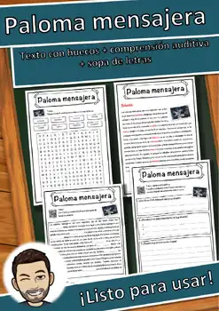
Paloma mensajera – Ficha de lectura: texto con huecos, comprensión auditiva y sopa de letras

Paleontología – Ficha de lectura: texto con huecos, comprensión auditiva y sopa de letras
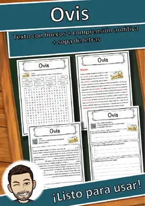
Ovis – Ficha de lectura: texto con huecos, comprensión auditiva y sopa de letras
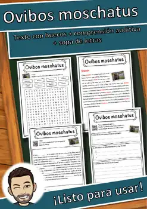
Ovibos moschatus – Ficha de lectura: texto con huecos, comprensión auditiva y sopa de letras

Oslo – Ficha de lectura: texto con huecos, comprensión auditiva y sopa de letras
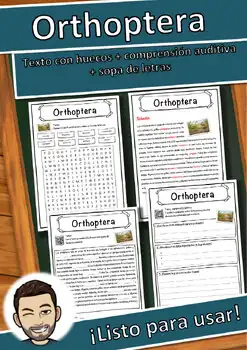
Orthoptera – Ficha de lectura: texto con huecos, comprensión auditiva y sopa de letras

Oriente Próximo – Ficha de lectura: texto con huecos, comprensión auditiva y sopa de letras

Orient Express – Ficha de lectura: texto con huecos, comprensión auditiva y sopa de letras
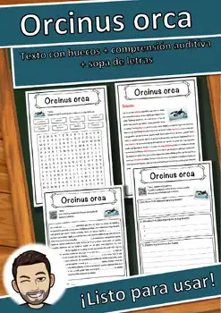
Orcinus orca – Ficha de lectura: texto con huecos, comprensión auditiva y sopa de letras

Orange – Ficha de lectura: texto con huecos, comprensión auditiva y sopa de letras
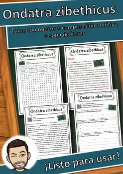
Ondatra zibethicus – Ficha de lectura: texto con huecos, comprensión auditiva y sopa de letras

Ogro – Ficha de lectura: texto con huecos, comprensión auditiva y sopa de letras

Oficina – Ficha de lectura: texto con huecos, comprensión auditiva y sopa de letras
No se encontraron recursos. Prueba con otra palabra o con otro filtro.